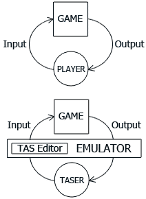

Глоссарий
Здесь перечислено большинство используемых в данном Руководстве терминов, и приведена их краткая характеристика. Более подробное описание некоторых терминов дано в Курсе новичка.
Рекомендуется сразу прочитать весь глоссарий целиком, так как многие термины тесно связаны друг с другом.
Почти все термины имеют англоязычный первоисточник, так как ТАСерские традиции вырабатывались в среде англоговорящих игроков.

Input – Ввод
Данные о действиях игрока, воспринимаемые игрой и влияющие на её поведение.
Из-за многозначности слова "Ввод" среди русскоязычных ТАСеров чаще используется англицизм "Инпут", который можно перевести как "Вводимые данные".
ТАСинг базируется на допущении, что поведение игры однозначно зависит от Ввода игрока и начального состояния игры, и ни от чего более (т.н. детерминизм).
Примеры существующих типов Ввода: нажатие кнопки джойстика, наклон аналогового стика, прикосновение стилуса, крик в микрофон и т.д.
В Тасэдиторе используется представление Ввода в формате "последовательность кнопочных состояний".
Замечание: когда игрок не нажимает ни одной кнопки, этот факт так же является Вводом.
Output – Вывод
Данные, выдаваемые игрой в ответ на Ввод игрока.
Из-за многозначности слова "Вывод" в данном Руководстве используются слова "результат", "реакция игры" и т.п.
Процесс игры в любую видеоигру можно представить в виде зацикленного взаимодействия между субъектом (игроком) и объектом (игрой).
Примеры существующих типов Вывода: изображение, звук, вибрация джойстика, изменение просматриваемой ячейки памяти, информация о лаге и т.д.
Walkthrough – Прохождение (прохождение видеоигры)
Последовательность действий для успешного завершения игры.
Эта последовательность вводится в игру с помощью устройства ввода (например, джойстика). Последовательность может быть либо исполнена вживую (real-time – в реальном времени), либо приготовлена в виде воспроизводимых данных (например, журнал нажатых кнопок). Во втором случае эту последовательность можно редактировать.
Speedrun – Пробег
Прохождение с целью самого быстрого завершения игры.
Часто используется англицизм "cпидран".
В некоторых играх присутствует встроенный режим под названием "Speedrun" или "Time Attack", при котором игра ведёт учёт затраченного времени на прохождение. Для других игр можно использовать внешний таймер, измеряя время в секундах или TV-кадрах (обычно подразумевается 60 кадров в секунду).
TAS (Tool-Assisted Superplay / Tool-Assisted Speedrun) – ТАС
Прохождение, при создании которого были использованы инструменты для редактирования совершаемых действий игрока.
Процесс создания ТАСа называется ТАСингом, а авторы зовутся ТАСерами.
Благодаря редактированию Ввода ТАСер освобождается от некоторых человеческих ограничений (например, слабой реакции) и может направить все усилия на создание крайне неординарных прохождений видеоигр. Это может быть не только спидран, но и развлекательный видеоролик (playaround).
ТАСы распространяются:
Movie – Мувик (фильм)
Контейнер для хранения Ввода и сопутствующих данных.
В отличие от видеороликов, игровой Вывод (изображение и звук) в мувике не хранится, он появляется на экране только в результате применения Ввода мувика к соответствующей игре.
Также мувиком называется файл (movie file), в котором хранится Ввод и сопутствующие данные.
Lag – Лаг (задержка)
Превышение нормы при задержке между Вводом и Выводом.
При зацикленном взаимодействии между игроком и игрой обычно устанавливается режим Ввода и Вывода через равные промежутки времени, например, ровно 60 раз в секунду.
Процессор может производить строго фиксированное количество операций в единицу времени. Но игра пытается имитировать безграничность реальной жизни, поэтому количество игровых объектов может сильно варьироваться. Как следствие, возможны ситуации, когда обработка объектов занимает больше времени, чем отведено. В таких ситуациях задерживается генерация Вывода и опрашивание следующего Ввода.
Лишние задержки не выгодны при создании спидрана. Поэтому лаг зачастую выступает в качестве одного из факторов, который нужно учитывать во время создания Ввода. Обычно требуется минимизировать количество кадров с лагом.
Наличие лага в кадре определяется эмулятором сразу после окончания обработки данного кадра. Если во время эмуляции кадра игра опросила Ввод, считается, что лага в кадре нет. Если игра не опросила Ввод – лаг в кадре есть. В Тасэдиторе кадры с лагом отмечаются красными строками. Рисовать Ввод на этих кадрах бесполезно.
Desync – Рассинхронизация (расхождение)
Отличие Вывода от ожидаемого образца, в результате чего действия игрока расходятся с логикой игры.
Может произойти в случае, если Ввод проигрывается на другой игре, другом эмуляторе или с другими настройками синхронизирования. Также может произойти, если эмулятор не обеспечивает детерминизм должным образом.
Segment – Участок
Часть мувика, соответствующая промежутку времени между двумя игровыми событиями.
Разбиение мувика на участки – это разложение большой задачи на мелкие подзадачи.
Размер участка измеряется в кадрах, а границы участка обычно определяются игровыми событиями. Начальное событие отсекает все предыдущие задачи и концентрирует внимание ТАСера на ближайшем наборе условий. Конечное событие служит для оценки оптимальности всех вариантов решения текущей задачи.
Подробнее: Процесс ТАСинга
Optimization – Оптимизация
Процесс поиска оптимального (наилучшего) решения задачи на текущем участке.
Почти любую задачу в видеоиграх можно решить множеством разнообразных способов. У каждого способа есть свои плюсы и минусы. ТАСер перед началом работы выбирает свои цели (например, сделать пацифистский спидран), тем самым расставляя приоритеты среди вышеупомянутых плюсов и минусов. Поэтому любые способы решения можно оценить и сравнить между собой, чтобы определить лучший и худший.
Процесс оптимизация ТАСа заключается в редактировании Ввода и оценке получающегося Вывода. Когда ТАСер получает от игры более предпочтительный результат, он отмечает текущий Ввод в качестве основного, пока не найдёт ещё более оптимальный Ввод. В финальном ТАСе для каждой подзадачи оставлен наилучший вариант решения.
Подробнее: Методология ТАСинга
Improvement – Улучшение
Возможность решить задачу более оптимально.
Примеры улучшений в спидранах: устранение неточностей, использование неиспользованного таймсэйвера, повышение эффективности использования таймсэйвера, повышение развлекательности мувика без потери скорости.
Timesaver – Таймсэйвер
Любой внутриигровой трюк, который позволяет сэкономить время.
При создании спидрана ТАСеру необходимо использовать все незапрещённые возможности для максимально быстрого прохождения игры. В первую очередь это шлифовка Ввода с целью найти наилучшее решение, исходя из имеющихся знаний об игре. Во вторую очередь это расширение базы знаний – поиск и применение трюков. Настоящий ТАСер пытается собрать максимум информации об игре и использовать все известные трюки максимально эффективно, чтобы его рекорд скорости нельзя было легко побить.
Примеры таймсэйверов: фичи игры, баги игры, манипуляция удачей.
Замечание: иногда ТАСер сознательно отказывается от использования некоторых таймсэйверов, в этом случае для его ТАСа отводится отдельная категория на сайте. Например: спидран Super Mario Bros без использования кнопки B (отказ от фичи), спидран Sonic the Hedgehog без прохождения сквозь стены (отказ от бага).
Feature – Фича (особенность)
Запланированный аспект игры.
Некоторые фичи не существенны (а иногда и незаметны) для простого игрока, но существенны для ТАСера. Поэтому перед оптимизацией Ввода рекомендуется провести исследования игрового движка.
Примеры существеных для ТАСера фич: ускорение при ранении (damage boost), вынужденное ожидание при подсчёте очков, наличие субпикселей у координат персонажа, особенности искусственного интеллекта врагов и т.д.
Bug / Glitch – Баг / Глюк (ошибка)
Незапланированный аспект игры.
Используемые ТАСером баги должны быть воспроизводимыми (хотя бы теоретически) на настоящей приставке. Использование багов, специфичных для эмулятора, не разрешается.
Многие баги обнаруживаются даже при обычной игре без использования инструментов. Некоторые требуют тщательного исследования поведения игры и изучения её исполняемого кода.
Примеры багов: упрощённая проверка коллизий, отсутствие проверки испорченных данных в сохранении, непредусмотренное изменение ячеек оперативной памяти, ошибка в порядке очерёдности проверок и т.д.
Luck Manipulation – Манипуляция удачей
Неограниченная эксплуатация фич, использование которых при нормальной игре сдерживается нехваткой знаний у игрока.
По сути любые эксперименты с изменением Ввода являются манипуляцией с игровыми фичами. Но некоторые аспекты игр кажутся обычным игрокам особенно непредсказуемыми. Алгоритмы их функционирования нарочно скрыты разработчиками от невооружённого глаза, игроку они показаны как случайные и неконтролируемые.
Однако на самом деле все аспекты видеоигр являются детерминированными (однозначно зависящими от Ввода). Использование инструментов и вдумчивого анализа позволяет выявить скрытые закономерности и использовать их при создании Ввода мувика. А в некоторых случаях вместо исследования алгоритмов достаточно воспользоваться методом перебора, натыкаясь на удачный исход событий методом проб и ошибок, а затем оставляя в мувике именно тот Ввод, который приводит игру к удачному результату.
Подробнее: Нелинейный ТАСинг (пример манипуляции)
Subpixels – Субпиксели (дробная часть пикселя)
Наличие не только целых, но и дробных значений у координат персонажа в игре.
В общем случае ТАСеру следует понимать отличие между экранными координатами спрайта и реальными координатами физического объекта в игре. Только в простейших играх эти координаты совпадают, обычно же на экран выводится приблизительное положение вещей, где проекции всех объектов выравнены по сетке пикселей. Чтобы узнать реальные координаты (и другие скрытые от глаз игрока данные), нужно просматривать ячейки оперативной памяти эмулируемой платформы. Это делается с помощью просмотрщика памяти (Memory Watch) или Lua.
Recording – Запись
Один из способов создания Ввода в мувике.
Заключается в последовательном добавлении Ввода в конец мувика, одновременно с просмотром промежуточных результатов.
Другим способом является рисование Ввода непосредственно в мувике.
Подробнее: Панель инструментов, Методология ТАСинга, Традиционный метод ТАСинга
Rerecording – Перезапись (повторная запись)
Один из способов редактирования Ввода в мувике.
Заключается в последовательном изменении Ввода, начиная с определённого кадра, одновременно с просмотром промежуточных результатов.
Другим способом является непосредственная модификация Ввода в мувике.
Подробнее: Методология ТАСинга, Традиционный метод ТАСинга, Счётчик перезаписей
Multitracking – Мультитрекинг (многодорожечная запись)
Один из способов записи Ввода при прохождении игр в режиме нескольких игроков.
Заключается в поочерёдной записи Ввода на одном участке для каждого игрока отдельно.
Другим способом является запись Ввода для всех игроков сразу.
Подробнее: Панель инструментов
Frame Advance – Frame Advance (покадровая эмуляция)
Пошаговая эмуляция игры минимальными порциями (единицами измерения времени) – кадрами.
Используется для ручного управления ходом времени, является более эффективной заменой простому замедлению эмуляции.
Turbo – Турбо (повышенная скорость)
Ускорение эмуляции игры до максимально возможной скорости.
Используется для пропуска несущественных игровых событий и уменьшения времени ожидания при добегании к дальнему кадру мувика.
С помощью настроек эмулятора можно гибко варьировать скорость эмуляции, замедляя или ускоряя её при необходимости. Под Турбо понимается максимально возможная скорость эмуляции. Этот предел зависит от производительности вашего компьютера.
Подробнее: Панель инструментов, Нелинейный ТАСинг, Полуавтоматический ТАСинг
Savestate – Сэйв (сохранение)
Снимок состояния эмулируемой платформы.
В отличие от встроенных игровых сохранений, здесь сохраняется и восстанавливается исчерпывающая информация о состоянии эмулируемой системы.
Piano Roll – Piano Roll (перфолента)
Тип визуального представления данных, похожий на представление в виде таблицы.
Этот интерфейс используется в редакторах музыки (MIDI-секвенсорах и MOD-трекерах). Его имя и принцип действия унаследован из физического аналога (давно существовавшие свёртки перфорированной бумаги для механических клавесинов).
В Piano Roll Тасэдитора отображаются и редактируются данные мувика (Ввод и Маркеры), а также отображаются некоторые данные эмулируемой игры (текущий кадр, Журнал лага, Закладки и т.д.).
Каждая строка Piano Roll соотносится с одним кадром мувика.
Подробнее: Интерфейс Piano Roll, Спецификации Piano Roll
Playback cursor – Курсор Проигрывателя
Указатель на текущий проигрываемый кадр мувика.
События этого кадра отображаются в окне эмулятора в виде скриншота, а в Piano Roll соответствующая строка обозначается голубым цветом и значком "Play" (голубая стрелка).
Одновременно можно видеть только события одного кадра мувика. Чтобы увидеть скриншот последующих событий мувика, нужно переместить голубой Курсор Проигрывателя вперёд (вниз по Piano Roll), чтобы увидеть скриншот предыдущих событий, нужно переместить курсор назад (вверх по Piano Roll).
Подробнее: Интерфейс Piano Roll, Навигация Курсором Проигрывателя
Greenzone – Гринзона (зона мгновенного доступа)
Хранилище данных, специально разработанное для ускорения навигации Курсором Проигрывателя по мувику.
Это хранилище автоматически собирает сэйвы для каждого кадра мувика во время эмуляции, а при необходимости использует эти сэйвы для мгновенного прыжка Курсором Проигрывателя на любой кадр.
Подробнее: Панель инструментов, Настройка программы, Спецификации Гринзоны
Selection – Выделение
Набор строк Piano Roll, отмеченных специальным цветом (обычно синим).
Любая строка (и, соответственно, любой кадр мувика) является либо выделенной, либо не выделенной.
Выделение позволяет оперировать одновременно с несколькими кадрами, например, удалить целый регион кадров вместо удаления каждого кадра поодиночке.
Самый верхний выделенный кадр называется Курсором Выделения.
Курсор Выделения автоматически следует за процессом редактирования Ввода.
Подробнее: Интерфейс Piano Roll, Навигация Курсором Выделения
Marker – Маркер
Жёлтая отметка для строки в Piano Roll, акцентирующая внимание на этом кадре.
Маркером можно отметить любой кадр в Piano Roll. С помощью установки и удаления Маркеров можно повысить наглядность и удобство работы.
Цели использования Маркеров:
Подробнее: Интерфейс Piano Roll, Спецификации Маркеров
Note – Заметка
Однострочная текстовая запись, прилагаемая к каждому Маркеру.
Подробнее: Интерфейс Piano Roll, Управление, Продвинутые возможности
Bookmark – Закладка
Номерная отметка для кадра мувика.
В Тасэдиторе есть 10 слотов для Закладок.
Закладка сохраняет всю необходимую информацию о кадре, на который она установлена. В том числе то ответвление мувика, которое однозначно приводит игру к событиям данного кадра.
Закладки могут использоваться для навигации Курсором Проигрывателя, но в основном они используются для хранения ответвлений.
Подробнее: Панель инструментов, Спецификации Закладок
Branch – Ответвление
Полная копия мувика, хранящая его состояние на момент создания Закладки.
При желании текущий мувик может быть заменён на это ответвление, тем самым восстанавливается состояние мувика из копии.
С помощью ответвлений можно одновременно хранить в проекте несколько разных мувиков и мгновенно переключаться между ними:
Подробнее: Панель инструментов, Настройка программы, Спецификации ответвлений
Project – Проект
Контейнер для хранения рабочих данных при использовании в Тасэдиторе.
Также проектом называется файл (project file), в котором хранятся рабочие данные пользователя.
Подробнее: Продвинутые возможности
Lua – Lua
Интерпретируемый язык программирования, использующийся во многих ТАСерских эмуляторах.
Полезен для создания индивидуальных инструментов и визуализации данных.
Подробнее: Продвинутые возможности, Луа-автоматизация, Lua-функции
Bot – Бот (робот)
Средство для автоматизации определённых действий.
Обычно программы-боты используются для избавления человека от рутинных действий, не требующих высокой гибкости ума. В отличие от человека, боты не изобретают путь решения задачи, а методично перебирают варианты решения, следуя алгоритму, заложенному программистом.
В наши дни практично использовать ботов только для исчерпывающего перебора вариантов на очень коротком участке мувика. И в большинстве случаев ТАСеру проще перебрать варианты вручную, интуитивно отсеивая тупиковые варианты в уме, чем заниматься написанием бота и долгим ожиданием результатов полного перебора.
Для создания ботов требуется умение программировать. Обычно боты либо пишутся на Lua, либо встраиваются в эмуляторы с помощью модификации исходного кода.
Pattern – Шаблон
Заданная последовательность значений Ввода для одной (любой) кнопки.
Подробнее: Продвинутые возможности, Спецификации шаблонов
Created with the Personal Edition of HelpNDoc: Free EBook and documentation generator